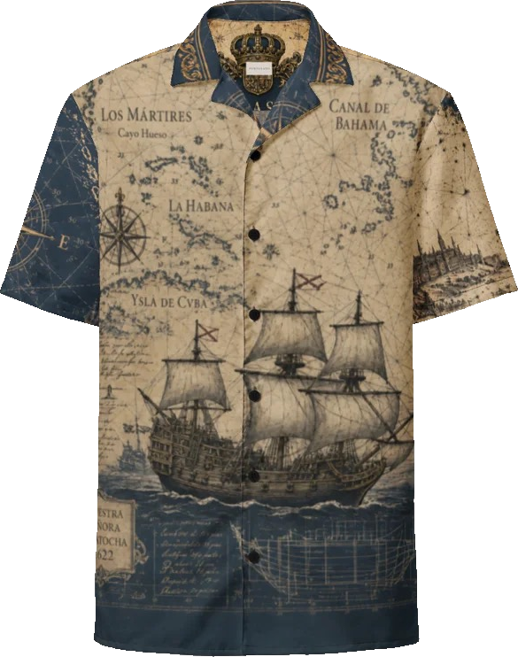
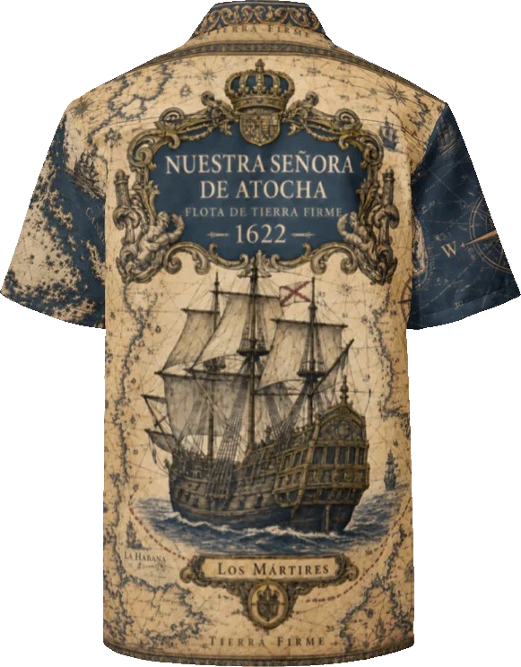
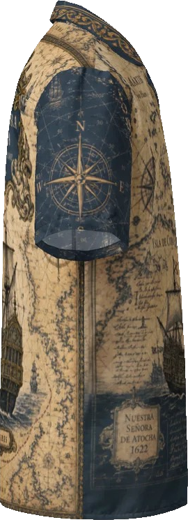
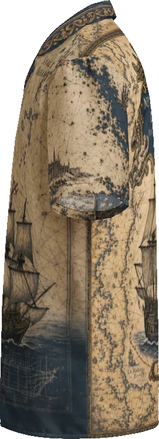

Weathered chartwork
Routes, coastlines, bearings, and chart-room marks wrap across the body.
 Portulano
Portulano
Maritime resort wear
Antique charts, old routes, stormlight, and salt air come together in shirts made for harbors, coast roads, late dinners, and open water.
Chartwork | Galleon | Open Water
Weathered maps, galleon linework, and sun-faded port colors carry across an easy resort shirt made for dinners, decks, and days near the water.


Old Routes | Open Water
Portulano begins with the old language of navigation: coastlines, compass bearings, cartouches, rigging, and the names sailors left on maps.
Nuestra Señora de Atocha carries that world in parchment tones, deep maritime blue, aged ornament, and galleon artwork with the character of something found in a captain's chest.


Age of Sail

Details
Routes, coastlines, bearings, and chart-room marks wrap across the body.
The ship gives the piece its center without overpowering the silhouette.
Dark sea tones and parchment ground give the shirt a sharper edge after sundown.
Gallery


Maritime resort wear
For evenings near the water, old ports, resort bars, and wardrobes that make room for a little horizon.